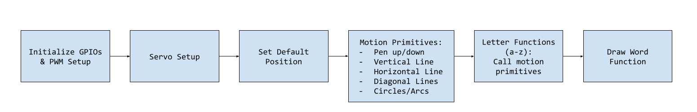
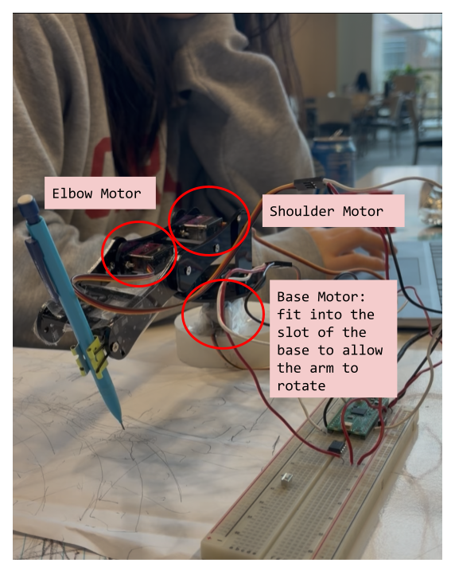
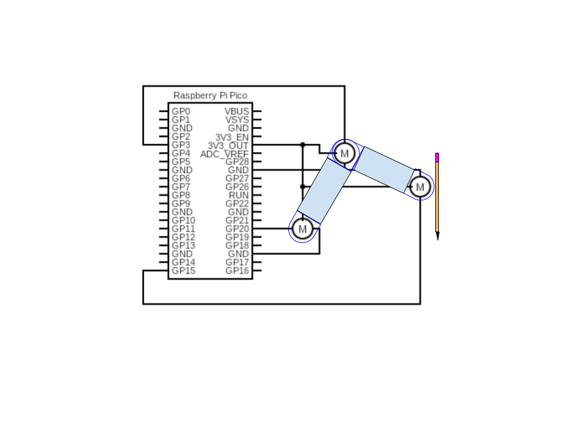
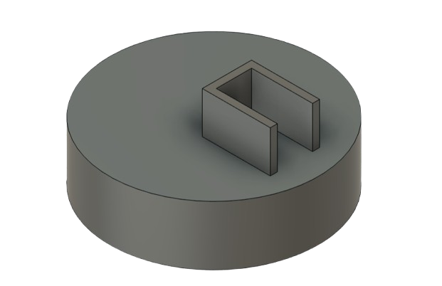

ECE 4760 Final Project by Shelly Zhou (sz498) and Sayee Edekar (ste27)
A microcontroller-driven robotic arm that converts digital letter definitions into physical handwriting using real-time servo control.
Project Introduction
This project features an autonomous handwriting robot that produces physically written block letters using an embedded microcontroller system. We designed and implemented a robot that generates X–Y motion trajectories and precisely controls multiple motors to produce consistent, legible handwritten output on paper. The project was motivated by an interest in bridging digital automation with physical motion, and it provided hands-on experience with real-time embedded control, motion filtering, and mechatronic system integration in a human-centered application.
High Level Design
Rationale and Sources of Project Idea
The idea for this project originated from an interest in robotic arm systems and plotters, combined with our interest in building a mechanism that demonstrates how software-defined motion translates into physical behavior. Unlike traditional Cartesian plotters, this system mimics a simplified human arm with rotational joints, making it a more intuitive platform for studying servo-based motion control.
Background Math
Implemented Design. Our design relies on empirically tuned angular trajectories for each servo. Trigonometric functions such as sine and cosine are used to generate circular and arc-based strokes, while linear interpolation and incremental stepping are used for straight lines and diagonals. Motion smoothness is enforced by limiting angular step size and introducing fixed delays between servo updates.
Servo motion is implemented in discrete time by incrementally stepping the current angle toward a target angle. The maximum step size is limited to enforce smooth motion and reduce mechanical oscillation.
Circular and arc-based letter strokes are generated parametrically using sine and cosine functions. Incrementing the parameter angle in small steps produces smooth curved motion when mapped to servo trajectories.
Inverse kinematics (IK). IK was our initially intended approach to arm movement. Appendix C uses the following math exactly in its IK function to integrate a coordinate system with the arm. IK describes the mathematical process of computing the joint angles require for a robotic arm to place its end effector at a desired position in Cartesian space. For this project, the robot can be modeled as a two-link planar arm with rigid links of lengths \(L_1\) and \(L_2\), connected by rotational joints. The base of the arm is fixed, and the pen tip position is defined by coordinates \((x, y)\) on the writing surface.
Given a target point \((x, y)\), the distance from the base of the arm to the pen tip is
\[r = \sqrt{x^2 + y^2}\]
Using this distance, the elbow joint angle \(\theta_2\) can be computed using the law of cosines applied to the triangle formed by the two arm links and the line to the target point:
This equation yields two possible solutions corresponding to the elbow-up and elbow-down configurations of the arm. To ensure predictable motion and avoid sudden configuration changes, a single consistent configuration would be selected during operation.
Once \(\theta_2\) is known, the shoulder angle \(\theta_1\) can be computed by decomposing the geometry into two angles. The angle from the base to the target point is
\[\phi = \tan^{-1}\left(\frac{y}{x}\right)\]
The internal angle between the first arm link and the line to the target point is
Together, \(\theta_1\) and \(\theta_2\) fully define the arm configuration required to reach a given point on the page. In practice, inverse kinematics must be computed repeatedly for closely spaced points along a trajectory to ensure smooth motion.
Although this inverse kinematics formulation was explored, mechanical backlash, limited servo resolution, and imperfect link geometry made precise positioning unreliable. As a result, the final implementation implemented the above method of tuned angular trajectories that produced more consistent handwriting results on the physical hardware.
Logical Structure
At the lowest level, the system generates PWM signals using RP2040 hardware peripherals to control servo motors. These signals are abstracted into smooth motion primitives such as straight lines and arcs by gradually stepping servo angles toward target values. Individual letters are constructed from sequences of these primitives, and higher-level routines sequence letters into complete words.

Figure 1: High Level Code Overview.
Hardware/Software Tradeoffs
Servo motors were selected for their simplicity, low cost, and ease of integration. This choice sacrifices absolute positional accuracy and repeatability compared to stepper motors or closed-loop systems. Open-loop control was used instead of encoders or feedback sensors, reducing hardware complexity while increasing reliance on software-based motion smoothing and calibration.
Relevant IP Considerations
Handwriting robots and plotting mechanisms are well-established concepts with many existing patents and open-source implementations. This project does not attempt to replicate any proprietary mechanism and is intended strictly for educational use.
Program and Hardware Design
Program Details
PWM
Each MG90S servo expects a pulse between 500 µs (0°) and 2500 µs (180°) at a period of 20 ms (50 Hz). Using the RP2040's hardware PWM modules, we configured each GPIO pin connected to a servo as a PWM output:
Clock Configuration: 125 MHz system clock divided by 125 → 1 MHz PWM clock, giving 1 µs resolution.
Wrap Value: PWM wrap set to 20000 → 20 ms period (50 Hz).
setup_servo(uint pin): Configures a given GPIO pin for PWN to control a servo; Sets PWN frequency, resolution, and enables the channel
set_servo_angle(unit pin, float target_angle, float step_delay_ms, float step_size): Moves a specified servo to a target angle gradually for smooth motion; Updates PWM pulse width in small increments with delays to avoid jerky movements
Smooth Motion Algorithm
Rather than moving servos directly to a target angle (which causes jitter), the firmware implements incremental stepping:
Current angles stored in static variables.
Servo is stepped in small increments (e.g., 1°) with fixed delays (10–20 ms) between updates.
Oscilloscope verification: Measured PWM pulse widths at each GPIO to ensure accurate and consistent timing.
Handwriting Primitives
v_line(), h_line(): straight strokes.
diag_left(), diag_right(): diagonal strokes.
circle(), arc(): curved motions using sine/cosine for base/elbow angles.
pen_up(), pen_down(): control vertical motion.
Utility Functions
default_pos(): Resets all servos to a deafult "home" position (base at 90 degrees, elbow and shoulder at 0 degrees)
pause_short(): Pauses execution for 200 ms
pause_long(): Pauses execution for 500 ms
Hardware Details
The mechanical system was constructed using parts from a craft robotic car kit with a claw arm, modified for handwriting purposes. A custom 3D-printed base clamps the system to a table and houses the base rotation servo. Two additional servos control the shoulder and elbow joints, enabling vertical motion. The writing instrument is held using a modified binder clip attached to the end effector. The design can be replicated using commonly available components and does not require custom PCBs.

Figure 2: Arm Parts Labeled
Electrical and Wiring Details:
Servo Power: All three MG90S servos were powered directly from the RP2040’s 3.3 V output. This is below the recommended operating voltage (4.8–6 V), causing intermittent or weak motion, especially when multiple servos move simultaneously.
Ground Connections: Servo grounds and RP2040 ground are connected together to provide a common reference for reliable PWM signaling.
PWM Timing: PWM outputs are generated by the RP2040’s hardware PWM modules at a 1 MHz clock. Each servo expects a pulse width from 500 µs (0°) to 2500 µs (180°) at a 20 ms period (50 Hz).
Signal Considerations: The 3.3 V logic level is marginal for full servo reliability. Incremental angle stepping and careful testing of individual letters were used to mitigate this issue.

Figure 3: Wiring Diagram

Figure 4: Base CAD
GPIO Connections
Component
GPIO Pin
Description
Base Servo
15
Controls rotation of base joint
Shoulder Servo
3
Controls shoulder joint (vertical movement)
Elbow Servo
20
Controls elbow joint (vertical motion of pen)
Things That Did Not Work
Inverse Kinematics Attempt
Initially, we attempted to implement full inverse kinematics (IK) to calculate the precise angles for the base, shoulder, and elbow servos to reach arbitrary X–Y positions on the paper. However, due to mechanical backlash, imperfect link lengths, and the low resolution of hobby servos, the IK approach was unreliable. The robot frequently overshot or undershot the intended positions, producing illegible results. Consequently, we abandoned formal IK in favor of empirically tuned angular trajectories for each letter stroke.
Servo Control Issues
During early testing, powering the servos together did not cause issues. However, after assembling the full robot, we often observed that servo motors would fail to respond unless their wires were held in certain positions. This wire sensitivity was likely caused by insufficient voltage: the RP2040 outputs 3.3 V logic signals, which are marginal for driving three hobby servos simultaneously. Sometimes the servos moved reliably, but other times they were inoperative, leading to failed letter strokes.
Design/Code References and Use of AI Tools
General PWM generation patterns were referenced and adapted from ECE 4760 PWM demo code. AI was used to better understand the application of IK in this context as well as for debugging inconsistencies faced when writing words. AI was also used for debugging before we defined bugs as hardware issues. No code generated by ChatGPT was used directly.
Results of the Design
The final system demonstrated the ability to autonomously generate handwritten output using a servo-driven robotic arm and an embedded microcontroller. Using hardcoded motion paths composed of simple geometric primitives, the robot was able
to successfully write individual block letters with smooth and continuous motion. This confirmed that the overall control structure, PWM generation, and motion smoothing approach were fundamentally sound.
In practice, the system’s performance was limited by the available voltage supply to the servo motors. While single-letter writing was generally successful, attempts to write multiple letters sequentially were inconsistent, as simultaneous or repeated
servo movements occasionally resulted in insufficient torque or unresponsive motion. This limitation was hardware-related rather than algorithmic, and it constrained the system’s ability to operate reliably over longer writing sequences.
Despite these constraints, the project achieved its primary demonstration goal by showing that autonomous handwriting is achievable using open-loop control and predefined motion trajectories. The results highlight both the potential of software- based motion control and the importance of appropriate power delivery in embedded mechatronic systems.
Conclusions
This project explored the design and implementation of an autonomous handwriting robot using an embedded microcontroller and a servo- actuated robotic arm. The system successfully demonstrated controlled handwriting motion by executing predefined, hardcoded trajectories to form block letters on paper.
Although the robot was able to write individual letters, the reliability of multi-letter writing was limited by insufficient voltage supplied to the servo motors. This hardware constraint affected repeatability and prevented consistent operation during extended motion sequences. As a result, the final implementation prioritized demonstrating core functionality rather than full word-level handwriting.
The project provided valuable insight into the interaction between software control strategies and real-world hardware limitations. Future improvements, such as powering the servos from a dedicated external supply or adding feedback mechanisms, would
significantly improve reliability and enable more complex motion planning. Overall, the project served as a meaningful exercise in embedded systems design, motor control, and practical engineering tradeoffs.
Intellectual Property Considerations
All code below was generated by use with use of AI as defined previously. Nobody else's IP was used. No code from the public domain was used. No designs were reverse-engineered as far as our knowledge. There are likely no patent options for our part as this is a common project, despite the many different avenues of implementation.
Appendix A: Permissions
Project on the Course Page
The group approves this report for inclusion on the course website.
Project on the Course YouTube Channel
The group does not approve the video for inclusion on the course youtube channel.
Appendix B: Full Handwriting_bot_expanded_v1.c Code
/**
* Handwriting_bot_expanded_v1.c
*
* Handwriting robot for RP2040 / Pico with smooth movement
*
* Default orientation:
* - base servo: 90 degrees points to center
* - shoulder servo: 0 degrees points straight up
* increasing angle moves lever down toward paper
* - elbow servo: 0 degrees points horizontal
* increasing angle moves lever down/up away from paper
*
* Geometries:
* L1 = 77 mm (shoulder → elbow)
* L2 = 90 mm (elbow → pencil tip)
* Shoulder pivot height = 90 mm above paper
*
* PWM:
* 500–2500 µs = 0–180°
*/
#include
#include
#include "pico/stdlib.h"
#include "hardware/pwm.h"
// Servo pins
#define BASE_PIN 15
#define ELBOW_PIN 20
#define SHOULDER_PIN 3
// -------------------- Setup servo --------------------
void setup_servo(uint pin)
{
gpio_set_function(pin, GPIO_FUNC_PWM);
uint slice = pwm_gpio_to_slice_num(pin);
// 125 MHz system clock → divide by 125 → 1 MHz PWM clock → 1 µs resolution
pwm_set_clkdiv(slice, 125.0f);
// 20 ms period = 20,000 µs
pwm_set_wrap(slice, 20000);
pwm_set_enabled(slice, true);
}
// -------------------- Smooth servo movement --------------------
void set_servo_angle(uint pin, float target_angle, float step_delay_ms, float step_size)
{
static float current_angle_base = 90;
static float current_angle_shoulder = 0;
static float current_angle_elbow = 0;
float *current_angle;
if (pin == BASE_PIN) current_angle = ¤t_angle_base;
else if (pin == SHOULDER_PIN) current_angle = ¤t_angle_shoulder;
else if (pin == ELBOW_PIN) current_angle = ¤t_angle_elbow;
else return;
if (target_angle < 0) target_angle = 0;
if (target_angle > 180) target_angle = 180;
while (fabs(*current_angle - target_angle) > 0.1f)
{
if (*current_angle < target_angle) *current_angle += step_size;
else *current_angle -= step_size;
if (*current_angle > 180) *current_angle = 180;
if (*current_angle < 0) *current_angle = 0;
uint16_t pulse_us = 500 + ((uint16_t)(*current_angle) * 2000) / 180;
uint slice = pwm_gpio_to_slice_num(pin);
uint channel = pwm_gpio_to_channel(pin);
pwm_set_chan_level(slice, channel, pulse_us);
sleep_ms(step_delay_ms);
}
}
// -------------------- Handwriting primitives --------------------
void pen_down() {
set_servo_angle(ELBOW_PIN, 90, 15, 1);
set_servo_angle(SHOULDER_PIN, 90, 15, 1);
}
void pen_up() {
set_servo_angle(ELBOW_PIN, 20, 15, 1);
set_servo_angle(SHOULDER_PIN, 10, 15, 1);
}
void v_line() {
set_servo_angle(ELBOW_PIN, 90, 15, 1); // pencil down
set_servo_angle(SHOULDER_PIN, 90, 15, 1);
for (float a = 90; a >= 25; a -= 1) {
set_servo_angle(ELBOW_PIN, a, 20, 1);
}
for (float a = 25; a <= 90; a += 1) {
set_servo_angle(ELBOW_PIN, a, 20, 1);
}
}
void h_line() {
for (float a = 105; a >= 70; a -= 1) {
set_servo_angle(BASE_PIN, a, 15, 1);
}
for (float a = 70; a <= 105; a += 1) {
set_servo_angle(BASE_PIN, a, 15, 1);
}
}
void diag_left() {
for (int i = 0; i <= 12; ++i) {
set_servo_angle(BASE_PIN, 90 + i, 12, 1);
set_servo_angle(ELBOW_PIN, 90 - i, 12, 1);
}
for (int i = 12; i >= 0; --i) {
set_servo_angle(BASE_PIN, 90 + i, 10, 1);
set_servo_angle(ELBOW_PIN, 90 - i, 10, 1);
}
}
void diag_right() {
for (int i = 0; i <= 12; ++i) {
set_servo_angle(BASE_PIN, 90 - i, 12, 1);
set_servo_angle(ELBOW_PIN, 90 - i, 12, 1);
}
for (int i = 12; i >= 0; --i) {
set_servo_angle(BASE_PIN, 90 - i, 10, 1);
set_servo_angle(ELBOW_PIN, 90 - i, 10, 1);
}
}
void circle(float base_offset, float elbow_offset, float radius_base, float radius_elbow) {
pen_down();
int steps = 24;
for (int i = 0; i <= steps; ++i) {
float t = (float)i / (float)steps * 2.0f * M_PI;
float b = 90 + base_offset + cosf(t) * radius_base;
float e = 90 + elbow_offset + sinf(t) * radius_elbow;
set_servo_angle(BASE_PIN, b, 18, 1);
set_servo_angle(ELBOW_PIN, e, 18, 1);
}
pen_up();
}
void arc(float base_offset, float elbow_offset, float radius_base, float radius_elbow, float start_deg, float end_deg) {
pen_down();
int steps = 18;
for (int i = 0; i <= steps; ++i) {
float t_deg = start_deg + (end_deg - start_deg) * ((float)i / steps);
float t = t_deg * M_PI / 180.0f;
float b = 90 + base_offset + cosf(t) * radius_base;
float e = 90 + elbow_offset + sinf(t) * radius_elbow;
set_servo_angle(BASE_PIN, b, 18, 1);
set_servo_angle(ELBOW_PIN, e, 18, 1);
}
pen_up();
}
// -------------------- Letters --------------------
void letter_a() {
circle(0, -10, 8, 10); set_servo_angle(BASE_PIN, 105, 15, 1); v_line();
}
void letter_b() {
v_line(); arc(-6, 5, 8, 10, 270, 90); arc(-6, -5, 8, 10, 270, 90);
}
void letter_c() {
set_servo_angle(ELBOW_PIN, 70, 15, 1); arc(-8, 0, 14, 18, 45, 315);
}
void letter_d() {
v_line(); arc(-6, 0, 12, 18, 270, 90);
}
void letter_e() {
arc(0, 0, 10, 12, 0, 300); set_servo_angle(ELBOW_PIN, 70, 15, 1); set_servo_angle(BASE_PIN, 100, 15, 1); h_line();
}
void letter_f() {
set_servo_angle(ELBOW_PIN, 90, 15, 1);
set_servo_angle(SHOULDER_PIN, 90, 15, 1);
set_servo_angle(ELBOW_PIN, 70, 15, 1);
set_servo_angle(BASE_PIN, 100, 15, 1);
h_line();
set_servo_angle(ELBOW_PIN, 60, 15, 1);
set_servo_angle(BASE_PIN, 95, 15, 1);
h_line();
}
void letter_g() {
letter_c();
set_servo_angle(BASE_PIN, 100, 15, 1);
set_servo_angle(ELBOW_PIN, 70, 15, 1);
h_line();
}
void letter_h() {
// left vertical
v_line();
sleep_ms(500);
// move elbow to middle for horizontal line
set_servo_angle(ELBOW_PIN, 40, 20, 1);
h_line();
sleep_ms(500);
// right vertical
v_line();
sleep_ms(500);
}
void letter_i() {
set_servo_angle(ELBOW_PIN, 90, 15, 1);
set_servo_angle(BASE_PIN, 90, 15, 1); h_line();
sleep_ms(300);
v_line();
sleep_ms(300);
set_servo_angle(ELBOW_PIN, 90, 15, 1);
h_line();
}
void letter_j() {
set_servo_angle(ELBOW_PIN, 70, 15, 1);
h_line();
set_servo_angle(BASE_PIN, 100, 15, 1);
v_line();
set_servo_angle(ELBOW_PIN, 30, 15, 1);
set_servo_angle(BASE_PIN, 80, 15, 1);
h_line();
}
void letter_k() {
v_line();
set_servo_angle(BASE_PIN, 84, 15, 1);
diag_right();
set_servo_angle(BASE_PIN, 96, 15, 1);
diag_left();
}
void letter_l() {
v_line();
set_servo_angle(ELBOW_PIN, 60, 15, 1);
set_servo_angle(BASE_PIN, 105, 15, 1);
h_line();
}
void letter_m() {
v_line();
set_servo_angle(ELBOW_PIN, 60, 15, 1);
set_servo_angle(BASE_PIN, 82, 15, 1);
v_line();
set_servo_angle(BASE_PIN, 100, 15, 1);
v_line();
}
void letter_n() {
v_line();
set_servo_angle(BASE_PIN, 100, 15, 1);
diag_left();
set_servo_angle(BASE_PIN, 110, 15, 1);
v_line();
}
void letter_o() {
circle(0, 0, 8, 12);
}
void letter_p() {
v_line();
arc(-6, 6, 10, 12, 270, 90);
}
void letter_q() {
letter_o();
set_servo_angle(BASE_PIN, 105, 15, 1);
set_servo_angle(ELBOW_PIN, 70, 15, 1);
h_line();
}
void letter_r() {
v_line();
set_servo_angle(BASE_PIN, 100, 15, 1);
diag_right();
}
void letter_s() {
arc(-6, 0, 10, 12, 45, 225);
arc(6, 0, 10, 12, 225, 405);
}
void letter_t() {
set_servo_angle(ELBOW_PIN, 70, 15, 1);
set_servo_angle(BASE_PIN, 100, 15, 1);
h_line();
set_servo_angle(BASE_PIN, 90, 15, 1);
v_line();
}
void letter_u() {
v_line();
arc(0, -8, 12, 12, 180, 360);
set_servo_angle(BASE_PIN, 105, 15, 1);
v_line();
}
void letter_v() {
set_servo_angle(BASE_PIN, 82, 15, 1);
diag_right();
set_servo_angle(BASE_PIN, 98, 15, 1);
diag_left();
}
void letter_w() {
letter_v();
set_servo_angle(BASE_PIN, 108, 15, 1);
diag_left();
}
void letter_x() {
set_servo_angle(BASE_PIN, 85, 15, 1);
diag_right();
set_servo_angle(BASE_PIN, 95, 15, 1);
diag_left();
}
void letter_y() {
set_servo_angle(BASE_PIN, 85, 15, 1);
diag_right();
set_servo_angle(BASE_PIN, 95, 15, 1);
diag_left();
set_servo_angle(BASE_PIN, 90, 15, 1);
v_line();
}
void letter_z() {
set_servo_angle(ELBOW_PIN, 70, 15, 1);
h_line(); set_servo_angle(BASE_PIN, 90, 15, 1);
for (int i = 0; i < 12; ++i) {
set_servo_angle(BASE_PIN, 90 - i, 10, 1);
set_servo_angle(ELBOW_PIN, 80 - i, 10, 1); }
set_servo_angle(ELBOW_PIN, 70, 15, 1);
set_servo_angle(BASE_PIN, 105, 15, 1);
h_line();
}
// set arm to default position
void default_pos(){
set_servo_angle(ELBOW_PIN, 0, 20, 1);
set_servo_angle(SHOULDER_PIN, 0, 20, 1);
set_servo_angle(BASE_PIN, 90, 20, 1);
}
// pause motors
void pause_short() { sleep_ms(200); }
void pause_long() { sleep_ms(500); }
// write given letter
void draw_word(const char *word) {
for (const char *p = word; *p; ++p) {
char c = *p;
set_servo_angle(BASE_PIN, 95, 12, 1);
pause_short();
if (c >= 'A' && c <= 'Z') c = c - 'A' + 'a';
switch(c) {
case 'a': letter_a(); break; case 'b': letter_b(); break;
case 'c': letter_c(); break; case 'd': letter_d(); break;
case 'e': letter_e(); break; case 'f': letter_f(); break;
case 'g': letter_g(); break; case 'h': letter_h(); break;
case 'i': letter_i(); break; case 'j': letter_j(); break;
case 'k': letter_k(); break; case 'l': letter_l(); break;
case 'm': letter_m(); break; case 'n': letter_n(); break;
case 'o': letter_o(); break; case 'p': letter_p(); break;
case 'q': letter_q(); break; case 'r': letter_r(); break;
case 's': letter_s(); break; case 't': letter_t(); break;
case 'u': letter_u(); break; case 'v': letter_v(); break;
case 'w': letter_w(); break; case 'x': letter_x(); break;
case 'y': letter_y(); break; case 'z': letter_z(); break;
case ' ': sleep_ms(300); break;
default: break;
}
default_pos();
pause_short();
}
}
// main
int main()
{
stdio_init_all();
setup_servo(BASE_PIN);
setup_servo(SHOULDER_PIN);
setup_servo(ELBOW_PIN);
default_pos();
sleep_ms(500);
// test: draw original H then a sample word
letter_h();
sleep_ms(5000);
while (true) {
tight_loop_contents();
}
return 0;
}
Appendix C: IK Code (Never Debugged due to Hardware Issues)
#include
#include
#include
#include "pico/stdlib.h"
#include "hardware/pwm.h"
#include
// HARDWARE CONFIG
#define BASE_PIN 4 // Base servo (rotation)
#define SHOULDER_PIN 3 // Shoulder servo (pen up/down)
#define ELBOW_PIN 20 // Elbow servo
#define BASE_HEIGHT 25.4
#define SHOULDER_HEIGHT 100.0
#define UPPER_ARM_LENGTH 77.0
#define FOREARM_HORIZONTAL 80.0
#define FOREARM_VERTICAL 65.0
// PWM CONFIG
#define PWM_FREQ 50
#define PWM_PERIOD 20000 // 20ms in microseconds
// PEN CONFIG
#define PEN_LIFT_OFFSET 20.0 // Degrees added to shoulder when pen is up
// SERVO STRUCT
typedef struct {
uint pin;
uint slice;
uint channel;
} Servo;
Servo base_servo, shoulder_servo, elbow_servo;
// SERVO FUNCTIONS
void servo_init(Servo *servo, uint pin) {
servo->pin = pin;
gpio_set_function(pin, GPIO_FUNC_PWM);
servo->slice = pwm_gpio_to_slice_num(pin);
servo->channel = pwm_gpio_to_channel(pin);
double divider = 125000000.0 / ((65535 + 1) * PWM_FREQ); // Clock divider
pwm_set_clkdiv(servo->slice, divider);
pwm_set_wrap(servo->slice, 65535);
pwm_set_enabled(servo->slice, true);
}
void servo_set_angle(Servo *servo, double angle) {
if(angle < 0) angle = 0;
if(angle > 180) angle = 180;
double pulse_us = 1000 + (angle / 180.0) * 1000; // 1-2ms pulse
uint16_t duty = (uint16_t)((pulse_us / PWM_PERIOD) * 65535.0);
pwm_set_gpio_level(servo->pin, duty);
sleep_ms(50);
}
// INVERSE KINEMATICS
void inverse_kinematics(double x, double y, double *base_angle, double *shoulder_angle, double *elbow_angle) {
*base_angle = 90.0; // Keep base centered
// Adjust target for pencil tip offset
double x_target = x - FOREARM_HORIZONTAL;
double y_target = y - FOREARM_VERTICAL;
// Translate to shoulder origin
double dx = x_target;
double dy = y_target - SHOULDER_HEIGHT;
double dist = sqrt(dx*dx + dy*dy);
// Forearm length
double forearm_len = sqrt(FOREARM_HORIZONTAL*FOREARM_HORIZONTAL + FOREARM_VERTICAL*FOREARM_VERTICAL);
// Elbow angle (law of cosines)
double cos_elbow = (UPPER_ARM_LENGTH*UPPER_ARM_LENGTH + forearm_len*forearm_len - dist*dist) /
(2.0 * UPPER_ARM_LENGTH * forearm_len);
if (cos_elbow > 1.0) cos_elbow = 1.0;
if (cos_elbow < -1.0) cos_elbow = -1.0;
*elbow_angle = acos(cos_elbow) * 180.0 / M_PI;
// Shoulder angle
double angle_to_target = atan2(dy, dx);
double cos_shoulder = (UPPER_ARM_LENGTH*UPPER_ARM_LENGTH + dist*dist - forearm_len*forearm_len) /
(2.0 * UPPER_ARM_LENGTH * dist);
if (cos_shoulder > 1.0) cos_shoulder = 1.0;
if (cos_shoulder < -1.0) cos_shoulder = -1.0;
double angle_offset = acos(cos_shoulder);
*shoulder_angle = (angle_to_target + angle_offset) * 180.0 / M_PI;
}
// MOVEMENT
void set_position(double x, double y, bool pen_down) {
double base_angle, shoulder_angle, elbow_angle;
inverse_kinematics(x, y, &base_angle, &shoulder_angle, &elbow_angle);
servo_set_angle(&base_servo, base_angle);
servo_set_angle(&elbow_servo, elbow_angle);
// Pen lift implemented via small shoulder offset
double shoulder_with_pen = shoulder_angle + (pen_down ? 0 : -PEN_LIFT_OFFSET);
servo_set_angle(&shoulder_servo, shoulder_with_pen);
sleep_ms(100);
}
// Draw a straight line
void draw_line(double x1, double y1, double x2, double y2, int steps) {
double step_x = (x2 - x1) / (double)steps;
double step_y = (y2 - y1) / (double)steps;
set_position(x1, y1, false); // Pen up
set_position(x1, y1, true); // Pen down
for (int i = 1; i <= steps; i++) {
double x = x1 + step_x * i;
double y = y1 + step_y * i;
set_position(x, y, true);
}
set_position(x2, y2, false); // Pen up
}
// Draw characters
void draw_character(char c, double x, double y, double size) {
switch(c) {
case 'A':
draw_line(x, y - 2*size, x + size/2, y, 10);
draw_line(x + size/2, y, x + size, y - 2*size, 10);
draw_line(x + size/4, y - size, x + 3*size/4, y - size, 5);
break;
case 'H':
draw_line(x, y, x, y - 2*size, 10);
draw_line(x + size, y, x + size, y - 2*size, 10);
draw_line(x, y - size, x + size, y - size, 5);
// draw_line(x, y, x, y - 2*size, 10);
// draw_line(x, y - 2*size, x, y - size, 10);
// draw_line(x, y - size, x + size, y - size, 10);
// draw_line(x + size, y - size, x + size, y - 2*size, 10);
// draw_line(x + size, y - size, x + size, y, 10);
break;
case 'L':
draw_line(x, y, x, y - 2*size, 10);
draw_line(x, y - 2*size, x + size, y - 2*size, 5);
break;
case 'O':
draw_line(x, y, x + size, y, 5);
draw_line(x + size, y, x + size, y - 2*size, 10);
draw_line(x + size, y - 2*size, x, y - 2*size, 5);
draw_line(x, y - 2*size, x, y, 10);
break;
}
}
// Draw text string
void draw_text(const char *text, double start_x, double start_y, double size, double spacing) {
double x = start_x;
for (int i = 0; text[i] != '\0'; i++) {
if (text[i] == ' ') {
x += spacing;
} else {
draw_character(text[i], x, start_y, size);
x += spacing;
}
}
}
// HOME POSITION
void home_position() {
servo_set_angle(&base_servo, 90);
servo_set_angle(&shoulder_servo, 90);
servo_set_angle(&elbow_servo, 90);
sleep_ms(500);
}
// MAIN
int main() {
stdio_init_all();
printf("RP2040 Letter Writing Robot Arm\n");
servo_init(&base_servo, BASE_PIN);
servo_init(&shoulder_servo, SHOULDER_PIN);
servo_init(&elbow_servo, ELBOW_PIN);
sleep_ms(1000);
home_position();
printf("Drawing HELLO\n");
draw_text("HELLO", 10, 130, 10, 15);
home_position();
printf("Complete!\n");
while(1) {
tight_loop_contents();
}
}
Appendix D: Schematics
Refer to above sections for extended hardware schematics.
Appendix E: Work Distrubtion
Both members contributed equally to all aspects of the project, including mechanical assembly, software development, testing and debugging, and documentation.
Shelly Zhou: Mechanical assembly of the arm, modification of hardware components and wiring, designing the base in AutoCAD, PWM generation and algorithm for servo stepping, and implementing and testing handwriting primitives.
Sayee Edekar: Modifying mechanical parts, revising and 3D-printing the base, programming inverse kinematics, developing letter and word sequencing, and conducting testing and debugging of the system.